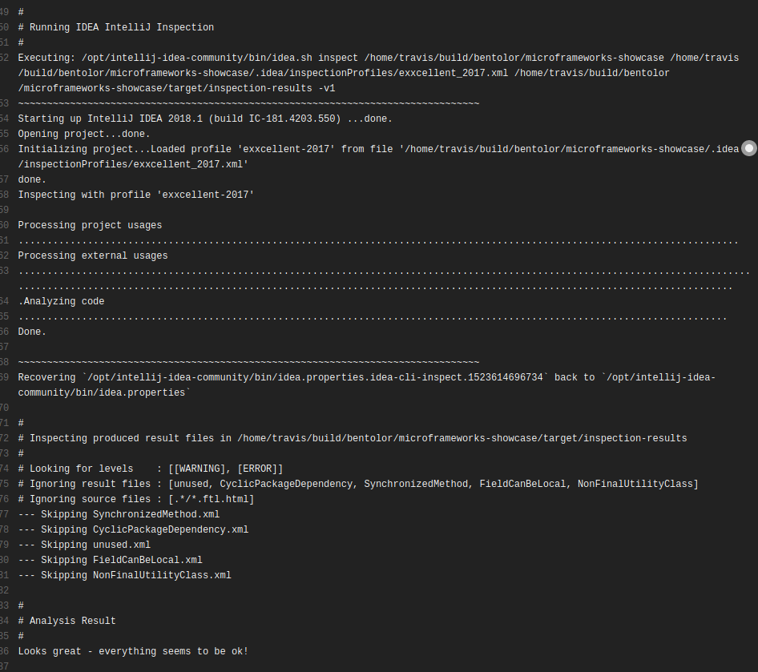

The Good
Probleme proaktiv & frühzeitig finden
Lösungsvorschläge & Coaching-Effekt
Automatisiert & kontinuierlich
Flächendeckende Analyse
"wie verstanden" vs. "wie gemeint"
Enforcement & Denk-Mal!-Trigger
(siehe: eXXcellent Code Quality Rules)
Motivation & Überblick
Java
Linter
Annotations
Architektur
Web
Andere Sprachen
Bottom Line
Static program analysis is the analysis of computer software that is performed without actually executing programs, in contrast with dynamic analysis, which is analysis performed on programs while they are executing.
In most cases the analysis is performed on the source code, sometimes on the object code.
Probleme proaktiv & frühzeitig finden
Lösungsvorschläge & Coaching-Effekt
Automatisiert & kontinuierlich
Flächendeckende Analyse
"wie verstanden" vs. "wie gemeint"
Enforcement & Denk-Mal!-Trigger
(siehe: eXXcellent Code Quality Rules)
Häufige Frustrations-Quelle
Aktionismus statt Reflexion
Gängige Probleme:
False-positives
Umständliche Triagierung
Mangelnde Performance
gibt früh & schnell Feedback, vermeiden Loops (Integration: Build)
hat eine geringe false-positive Rate
liefert potente Defaults, lässt sich leicht anpassen
liefert Erläuterungen & Hinweise
versteht Syntax von Sprache & Framework
differenziert nach Prioritäten und kommuniziert angemessen
Doesn’t-get-in-your-way™ (Performance, UX, …)

Einschätzung: ( )
Alternative Lösungen verfügbar
Erfordert Analyse-Lauf
Sehr aktiv gepflegt, BSD-Lizenz
Analyse-Lauf
breite Integration
(Ant/Maven/Gradle, IDE, SonarQube)
~300 Java-Rules
Fokus: (Textueller) Codestyle
Aktiv entwickelt
IDE-unterstützt (Formatter)
Einschätzung:
Fokus Style + Laufbasiert
→ ungünstige Kosten/Nutzen
IDEA flexibler
Bytecode-basiert
Urvater mit Fokus: Bugs
Project: ceased (2015)
Einschätzung:

Web-Interface
Ehemals: Wrapper um PMD, Findbugs, Checkstyle, …
Transition: → https://rules.sonarsource.com/
Breite Sprachabdeckung, Bug & Security Patterns, Erläuterungen
Verkrüppelte Branch-Analysis in der Community Version
→ teure Payware: Branch-Support & Gitlab PR decoration
Seit v7: keine Package Cycles mehr
Seit v8.1 Wieder da: Build Breaker (-Dsonar.qualitygate.wait=true)
Geht leicht verloren: Triagierung von false-positives
Convoluted Konfiguration von Rechte, Issues, Quality Profiles & Gate
Eher langer, schwerfälliger Weg von Codeänderung zum Feedback
Einschätzung: / ( ) Sehr leistungsfähig, etwas schwerfällig/Enterprisey
Standalone oder Connected-Mode mit SonarQube
Support: IDEA, Eclipse, VS Code, VS
Gleiche Rules wie SonarQube
Direkteres Feedback
Einschätzung:
Psi-basiert
→ Live-Visualisierung
→ auch bei defektem Code
→ performant
Mächtige Intentions & Quick-Fixes
priorisierte Visualisierung a
On-the-fly & Easy: Prio & Konfiguration
per-Scope Settings
Tausende Inspections, oft mit Optionen
Vorlage: exxcellent_intellij_2019_1.xml
Einschätzung:
idea-cli-inspectordocker run --rm -v $(pwd):/project \
bentolor/idea-cli-inspector \
-rf pom.xml -p inspectionprofile.xmlStartet IDEA-inspections headless
Analysiert Ergebnisse & lesbaren Report
Vergleichbar: Offizielles inspection-plugin & detekt
Probleme beider: 100% Stabilität
siehe auch Issue 19

(Spiritueller) Nachfolger von FindBugs
Bytecode-basiert!
Umständliche Supression via XML
Einschätzung:
Noch geringe Traktion
aktive Weiterentwicklung
Unterstützt statische Analyse. Auch zur Dokumentation für Entwickler.
javax.validation.constraints.NotNull? → Nein! Scope: Persistent
JSR305 javax.annotation.Nullable? → Nein! Problem: JDK9+ Jigsaw Package Clash
Empfehlung: org.jetbrains.annotations oder org.eclipse.jdt.annotation
Method contract annotations @Contract("null → fail; _ → param1")
An allen Schnittstellen alle in/out-Parameter annotieren
public interface Business {
@NotNull @Unmodifiable
public List<String> findNames(
@Range(1,9) int length,
@Nullable String contains,
@NotNull String prefix
);
}Rest → möglichst private oder package protected → flow infer
…oder Kotlin
Graphisch unterstützte, manuelle DSL-basierte Architektur-
beschreibung (Layer & Slices). Enterprisey. Commercial. Sperrig.
javac-Plugin (APT) rein zum Dependency-Check, Nahtlos & permanent, Jeder Zugriff muss explizit erlaubt werden. Nische. Elegant. Klein & Fein.
Dependency-Analyzer mit Metriken. Standalone. SonarQube Plugin.
Neuer Stern am deutschen Himmel, Basiert auf Java-DSL & JUnit.
slices().matching("com.myapp.(*)..").should().beFreeOfCycles()code-assertWrapper um JDepend, JaCoCo, Findbugs, PMD, Checkstyle, ktlint, detekt zur Einbindung via JUnit. Nische.
Graph-basierte Regeln, setzt auf Neo4j-Datenbank, textuelle DSL (XML, aber auch Asciidoctor)
MATCH
(t:Type)-[:DECLARES]->(m:Method)
RETURN
t.fqn AS Type, count(t) AS DeclaredMethods
ORDER BY
DeclaredMethods DESC
LIMIT 20module com.mysql.jdbc {
requires java.sql; // Module dependency
exports com.mysql.jdbc; // Export module package → enables access
provides java.sql.Driver // SPI: Provide service instance
with com.mysql.jdbc.Driver;
}Urvater: JSLint
(„Javascript – the good parts")
Fork: JSHint
("don’t be evil" & less opinionated)
Nachfolger & Empfehlung: ESLint
Breite Integration
Alles was Rang & Namen hat
Viele Konfigurationsoptionen &
Kaskadierende Konfiguration
Basiskonfiguration → eslint-config-airbnb
// @flow
function square(n: number): number {
return n * n;
}
square("2"); // Error!↓
interface Person {
firstName: string;
lastName: string;
}
function greeter(person: Person) {
return "Hello, " + person.firstName + " " + person.lastName;
}
let user = { firstName: "Jane", lastName: "User" };Recht gute Erfahrungen, integriert in msbuild
InspectCode und dupFinder guter Ergänzung in 2ter Reihe
An anti-bikeshedding Kotlin linter with built-in formatter. Simple.
Code smell analysis. Highly configurable. SonarQube Integration. Nutzt auch IDEA headless.

Aim high on start. Adjust goals fast on first annoyances!
→ Discuss every major violation & suppression
→ tweak settings freehanded
Enforce & verify regular!
Use live-tools & learn: IDEA (& SonarLint)
In doubt: (IDEA) + SonarQube/SonarLint + ESLint